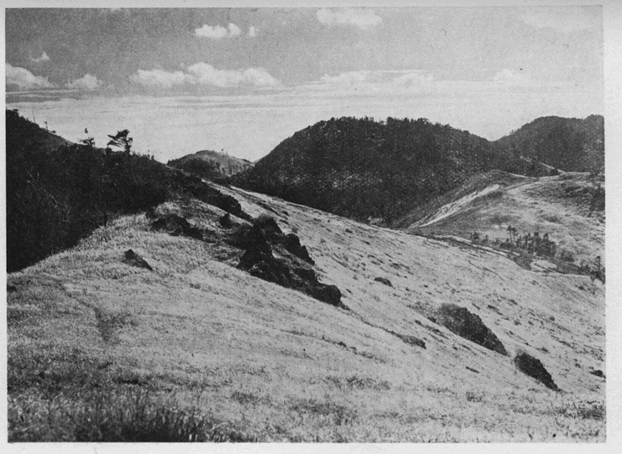
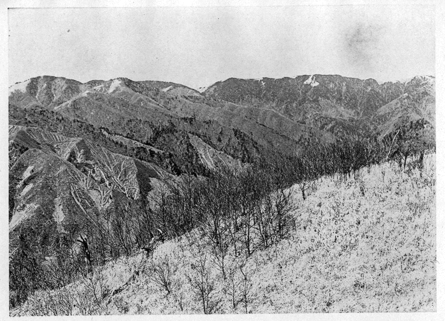

大正七年の秋の末に初めて黒岳山から大菩薩峠に至る大菩薩山脈の主要部を縦走した時の山旅は、おかしい程故障が多かった。これは余り
暢気に構えて必要の調査を怠ったり、地図を信用し過ぎたり、
又はそれを無視したりした結果でもあったが、どういう訳か
其時は誰の心にも少しの屈托がなかった。其日暮しの行きあたりばったりという気持であった。これが
失錯続出の最大原因であったように思う。
この縦走の主唱者は武田君で、大菩薩岳はちょいちょい登られているし、大菩薩峠を
踰えた人は更に多いのであるが、其他は未だ跋渉されぬかして噂も聞かない、それで早速この主要部の縦走に取り懸ろうではないかということになって、武田君と二人で同じ年の三月十六日の夜行列車で出発した。尤も季節が季節だけに山頂は雪が深いかも知れないから、
此時は必ず計画を遂行しようという程に決心していた訳ではなく、近くで山の様子を見たり聞いたりした上で、
若し差支なかったらという位のことにしてあった。折柄の雨は笹子峠に近づくと雪に変ったので、少し驚いた。塩山で下車しても雨は
歇まない。青梅街道を辿って柳沢峠に向う途中、
裂石の山門に休んでいると、一陣の南風が甲府盆地から吹き上げて来て、濃い霧のようなものが
僅に開けている視界を遮ったと思う間もなく、紛々として大雪が襲って来た。二寸三寸と見る間に積って行く、頼めば宿もするらしいゴロタのとある飲食店に立ち寄って、渋茶と焚火の馳走になりながら用意の朝食を済ました。其時の雪片は直径一寸もあろうという今迄に見たこともない大きな牡丹雪であったから、此家を立ち出る頃は既に八寸以上も積っていたし、峠の頂上近くの崖のある所では、路を横切って極めて小規模ながらアワの現象さえ起って、少なからず歩行に悩んだ。いつもならば午前九時には着く筈の落合に着いたのは十一時少し過ぎであった。この雪で暫く登山の見込も絶えたので、多摩川上流の峡谷の雪景を
咏めながら丹波山に下って一泊し、翌日上野原に出て帰京した。つまり此の旅行では大菩薩連嶺に関して
新に何等の得る所もなかったのである。
春も過ぎて夏の旅行が終ると、また大菩薩行の話が始まった。秋には必ず決行しようということに相談が纏って、今度は逆に南から登ろうではないかということになる。それには
初鹿野駅で下車して焼山道を取るか、初狩駅に下車して
真木川沿いの道を取るか、二の方法がある。前者は行程は近いが後者の方が興味がありそうに思われたので、それに依ることに決した。
のみならず自分等の
考では、午後十一時飯田町発の汽車に乗れば、初狩駅に着くのは翌日の午前三時であるから、地図に記された道を辿れば、真木から焼山へ踰える峠の頂上へ出て山稜を北に分け登っても、午前九時遅くも十時には一九八七米五の三角点のある峰に達するであろう、さすれば午後二時若くは三時には大菩薩峠の道に出られるに相違ない、大菩薩岳への登攀は其時の模様次第として、其日の
中に小菅なり丹波山なりへ下るのは敢て難事ではないと思った。物ごとが
斯う考え通りに簡単に片付いて行けば全く世話はない。
唯だ夜明けの遅くなった秋の日に午前三時とあっては提灯が必要であるが、それを提げて歩くのは厄介でないまでも、無くて済めば
夫れにこしたことはないから、有明月の頃を選ぶことにした。今度は武田君の知人である浅井君が同行することになって、三人で東京を出発したのは、雪には少し早く紅葉には既に遅い晩秋の十一月二十一日の夜であった。
二十二日。初狩駅で下車して
荷拵が済むと
直に歩き出す、浅井君のキャビネ版の写真機が荷物になるので皆で分担することにした。
其他は二度分の食糧と
少許の防寒具に過ぎない。空は隈なく晴れて陰暦十月十八日の月が照っている。真木では織物に名を得た郡内の地方だけに、電灯の光と共に
梭の音の洩れて来る早起きの家もあった。やがて西奥山に通ずる道と岐れ、桑畑の間を辿って、間もなく小山の突き出している鼻を左に曲って行くと、橋を渡って真木川の右岸に移った。思いの外に岸も高く岩壁なども露出して、滝でもあるらしい水音が聞えた。こういう夜道をすると、いつも木下利玄の
夜さむ道向うにきこえそめしせゝらぎに歩みは近より音のところを通る
せゝらぎの音するところに来かゝりしがまた遠退きてわが夜道すも
というのが思い出される。道は追々と勾配を増すが、
間明野を過ぎて
桑西に至る迄は迷うようなことは滅多にない。極めて寒村らしく想像される沿道の部落も、
見窄らしい住居は余り見受けなかった。養蚕が盛んで暮し向きに余裕のある為であろう。耕地も大部分は桑が植えてあるので、霜枯れた葉が人の
跫音にも落ちてかさこそと音を立てる。
桑西に着いたのは夜明けに近い頃であった。人家を出離れて暫く行くと左に小坂を下りて、すぐ川を渡る道を取らなければならない筈の所を、真直ぐに進んでしまった。これが自分等の行手に待ち構えていた多くの失錯の最初のものであった。尤も道の様子が前とは少し変ったことに気が付いて不安を感じたので、左手を覗いて見ると低い窪のようになっている、暗くて良くは分らないが、道らしいものは眼に入らないのに安心して、其
儘行程を続けた。なぜここで地図と照し合せて見ようとしなかったのか、吾ながら合点が行かない。
径の導くままに足に任せて辿って行く。行くに従って四辺の様子が銘々の予想とは、
如何も甚しく相違していることを誰も気にしているらしかった。夜が明けて見ると山の側面を登って居た。何処だかさっぱり見当がつかないので、幾つかの途方もない説が出たりする、たとえば焼山に
踰える峠の南の主脈を登っているのではないかというのは其一例だ。風が寒い。朝食の後やがて幅の広い尾根の頂上らしい所に着いて、南に富士を望み、北に間近く
茅処の山を超えて真黒に針葉樹の茂っている山を仰いで、初めて今居る位置が合点された。自分等はつまり野脇の谷に沿うて
中双里に登り着いたのである。
ここで北方の山の写真を一枚写すことになって、
可なり強く吹きつける寒い北風に曝されながら、浅井君が苦心
惨憺してやっとシャッターを切った。其当時は今のように整色乾板やフィルターなどが有ったかなかったか、そんなことは少しも知らない、よし有ったにしても此時は使わなかったことは
確だ、あとで原板を借りて写真屋に焼かせて見て驚いた。肉眼には紺碧の空にあれ程鮮かに浮き出して居た富士や南アルプスが、
靄に包まれたようにぼんやりしている。どうしてもこの富士をはっきり焼きつけて
呉れとねじ込んで、開業した許りの写真屋を
手古摺らせたりした。尤も後に其名を知ったこの黒岳山と、外に大菩薩岳とを撮した二枚だけは、近かったせいか先ず無難であったが、其他のアイノ尾根の上の大平附近から見た富士や南アルプス、御坊山の北側から眺めた飛竜や雲取、佐野峠から仰いだ大菩薩連嶺等は、情ない程に白茶化ていて、輪廓さえもはっきりしていない。山の写真と言えば極めて尖鋭でないと気の済まない自分は、それ等を見る
度につくづく整色乾板とフィルターとの有難さを思う。
ここ迄来ては
最早焼山へ踰える峠へは出ずに、黒木の茂っている山から東に曳いている尾根を上ろうと言う事に決した。即ち大峠附近から赤谷（赤岩）を経て黒岳山に至るものである。正面に見える茅処の山は、頂上だけ禿げていて麓は藪が深い。白いガレの様な細い谷が一すじ高く喰い込んでいるのが目を惹く。翌日
夫を登ることになろうとは元より知る由もなかった。
北に向って横を
搦みながら藪の中を下ること一時間で、ミズナラ、トチ、ブナ、センなどの大木が生えている渓沿いの平に出た、道がある。それを辿って四、五十分進むと左から来る水のある沢に橋が架けてある。そこでお茶を煮て早昼飯にした。これは地図上の広里村とある広の字の下へ流れて来る沢らしかった。空模様が次第に悪化して、風が南に変ると雨が降って来た。そこで引返して桑西に泊ることとし、上流の方を少し踏査した後、
幸に雨も小降りとなったので、十一時四十五分に道筋通りに下りに向った。一時間許りで炭焼の男に
遇ったのを幸に、附近の山や谷の名称を
質している
中にまた雨が大降りとなったので、二時間許り小屋で過した。真木沢のツメが大峠であること、大峠の東の山は
雁ヶ
腹摺に相違ないこと、黒木の山の東の茅処を赤谷と呼ぶことなどは判然したが、日向別当、日向ジャクシ、ハメエバ、鎮西ヶ丸などは、あの辺だと指示されても、雲や霧が深いので
慥めることを得なかった。
このハメエバはハマイバの転訛であるという。ハマイバならば日本全国の各地に
亙って広く存在する名であって、ハマを射た場所であることを示すものである。ハマとは特殊の的のことで、
之を射るに用いた弓矢をハマ弓ハマ矢と称し、後には単に男児の初正月を祝う飾物となってしまった。ハマは藁縄や藤蔓などを
綰ねて作ったり、
又は木で作ったりする。形は真丸で、
大さは径三寸位から一尺に及ぶものもあったらしく、大さに従って相当な厚みがあり、中央に穴が明いていた、つまり輪なのである。それを転がすか投げ上げるかして動いている所を横から射止めるのである。私の子供の頃は、ハマ投げと称して、二組に分れた十三、四歳の子供の群が、樫の木で作った径三寸か三寸五分位の輪を投げて、それが非常な勢いで転走して来るのを手頃の棒で受け留めて投げ返し、一定の線から追い出された組を負とする極めて危険な遊びがあった。これなどは射ることが
廃れてから思い付いた遊びであろう。
ハマイバという地名が平野に残っている例を私はあまり知らない、大抵山懐か丘陵に沿うた山村に限られているようである。近くは名栗川上流の名栗村、酒勾川中流の川村向原や内山村にもあるが、さりとて漸く二百米か、或は高くも四、五百米の丘上にあるのが普通で、
此処のように千七百米を超えた山上にあることは稀有の例である。実際そんな高い所まで登ってハマを射たものか、それともハマを射るによさそうな場所だと云うだけのことか、土地の古老にでも聞き質したら
謂れが解るかも知れない。ハマイバの南の鞍部はコメショイというそうであるが、これも場所がら珍しい名である。
降りみ降らずみの雨の中を、まだ少しは見るに足る紅葉を賞しながら、桑西に着いたのは午後四時十分であった。見かけの悪くない家の前の
流で、一人の男が鍬を洗っている。早速言葉を懸けて一泊したいと頼むと、案じたより易く引受けて
呉れた。小林仁兵衛という人の家で、山からは取り付きの左側である。夜は附近の地名に就て質し、吹切、野脇、湯ノ沢ドウミ（湯沢峠）などいう名を覚えた、干した舞茸の煮つけたのも珍しかった。
二十三日。宿を出たのは午前八時だ。空は少し晴れたけれども、雲行は北で面白くなく、五月のように暑い、それで出立も遅れたのであった。九時十五分に昨日雨休みをした小屋に着いて、河原で一休みする。九時半出立。大峠への道と岐れ、左に折れて木立の多い小さな細い尾根を上った。右側にも左側にも小沢がある。前面に茶臼や白谷ノ丸（白岩ノ丸）を望みながら
暢気に辿って行くと、大きな破れ小屋のある所で
途は絶えてしまった。十時二十分。あたりを探しても道の続きらしいものがない。どうも湯ノ沢峠への分れ道よりずっと上に来てしまったらしい。十五分
許り休んでから峠の道へ出る積りで、木立の中を左に
搦み気味に下った。この下りではボウダラの棘やイバラや
木苺の
刺で大に苦しめられた。一時間ももがいてやっと水のある沢に出られたが道の行衛は不明である。もう薮を潜るのは御免だ、
此沢を上ろうということになる。昨日中双里から望見したものだ。花崗岩のように真白な石英閃緑岩の露出した細い溝のような沢で、勾配も急である。この沢あるが為に山を白岩ヶ丸と呼び、それが白谷ノ丸となったものであろう。沢を上り切るに一時間以上を要した。
夫からの斜面は倒れた
茅の上を登るので、滑って危い。三人は思い思いの方向に別れて上った。二十分で漸く白谷ノ丸の頂上に出る。もう茅処続きで、所どころに表土を鋤き取ったのではないかと思わせるような、黒い地肌を露した
可なり広い、小石交りの裸地がある。どうして出来たのか不明であるが、まことに歩きよい。小躍りして吸い込まれるように黒木立の中に入り、久しく待望して居た一九八七・五米の三角点に二日懸りで立つことを得たのは午後一時半であった。曇っていて眺望はないが、一時間ばかり焚火をして休憩した。
三角点から北に向っては、予想していたように立派な切明けがある。但し倒木は多かった。ふくよかな苔に埋もれた黒木立の中を辿る足触りの心地よさ、土とも苔とも木ともつかぬ森林の香の漂うているなごやかな雰囲気に体を撫でられていると、いつもながら気がうっとりとなる。
然し今日は
落付いて身を任せては居られない。足早にトットと進んで行く。一の隆起を踰え、大きなガレの縁を辿り、小笹原を通って茅処の原に出た。これが今いうカワグルミ沢の頭であろう。
嵯峨塩へ下る道のある尾根の分岐点の所で、また迂闊にも滝沢の方へ出ている尾根に紛れ込み、途中でそれと気が付き、右に藪を掻き分けて小笹の繁った賽ノ河原の鞍部に出た時には三時半を過ぎていた。これから大菩薩峠へ出て日のある
中に小菅又は萩原に下ろうなどとは思いも寄らないことなので、嵯峨塩へ行くことに
極めて、引返して地図の点線の道を下り初めた。余り失錯を繰り返すので、今度は地図を手にして先に立って急いだ。あとの二人は話しながら悠々と来るらしい、次第に遅れる様子だ。一七四七米の隆起の横を廻る時、振り返ると二人の姿が見えない。時々オーイと呼びながら二十分以上も待っていた。
初は返事が左の谷の近くで聞えて、木立の間から人影も見えたが、終には遠く
且つ気のせいか前方から聞えて来るようだ。二人は左の谷を下って先へ出たのであろう。よし迷ったにした所で二人連れだから心配はない。もう間もなく暮れるというに、不案内の道の途中で暗くなっては困ると思ったので、それからは大急ぎで一散に駈け下りた。長い道は行けども行けども尽きない。其中に真暗な宵闇に包まれて足の進みが鈍る。地図に従えば
最早尾根の左側へ下ってもいい筈であるのに、道は
反って右へ右へとそれるようで、いつか河の岸へ出た。闇に透すと水面がほの白く光っている、
流に手を入れて右の方が上流であることを知った。
日川に相違ない。河床は平だから深いこともあるまいと、足探りに
徒渉して対岸に渡り、附近を物色すると踏み固められた道跡らしいものがある。それを辿って行くと急に尾根へ登り出す、これは嵯峨塩道ではないらしい。然しこの闇では如何にもならない。「
此処に野宿しよう」と独語して、風をよけた木蔭の窪い
沙地に、附近の流木を山のように積み上げて、大きな焚火を作り、外套にくるまって横になった。道もない谷間に下り込んだ二人はさぞ困っていることだろう。私はマッチがあって提灯がなく、二人は提灯があってマッチを持たない。この焚火の明りを認めたなら、それをたよりに二人とも寄って来るであろうなどと考えて居る中にも、空模様が絶えず気に懸ったが、時々星の光りが見られるようになったので安心した。耳を澄しても水のせせらぎと小さな獣の足音の外には、心待ちにした人声も聞えずに、長い夜は明けてしまった。

●大菩薩峠附近
二十四日。昨夜登りかけた道は
下日川峠へ通ずるものであることが判った。用意のパンで朝食を済まし、二人が来る筈の沢の落合の所に、一足先に嵯峨塩へ行く旨を書き記した紙片を木の枝にぶら下げて、午前六時に露営地を離れ、残りの紅葉を眺めつつも、迂廻した道のあたりを振り返り振り返り、日川沿いにゆっくり嵯峨塩へ向った、
礦泉に着くまで終に二人は姿を
顕さない。八時頃宿に着いた。声を懸けたが返事がないので、横へ廻ってひっそりした中庭へつかつか入って行くと、急に犬が吠え出す。
其声を聞いて、左側の離れ座敷の障子をガラリ開けながら、ヤアと飛び出して来たのは迷子になっている筈の二人であった。開いた口が塞がらないとはこの事だ。聞けば二人は怪我の功名で焼山部落に出で、途中まで送られて前夜の九時頃宿に着いたのだという。オヤオヤ何のこった、自分が迷子で二人に案じられていようとは。
今日は天気もよくない上に、半端なので逗留と決し、浅井君は薬学校の先生だけに草の根を掘るに忙しく、武田君は主人を相手に地名の
穿鑿に耽ったが、予期した程の収穫はなかった。猟師でないから土地に
精しくないのは止むを得ない。
唯だ雁ヶ腹摺に就ては、自分等の考えていた山とどうも違うようなので、よく訊ねて見ると、大ガレの北にある茅処の山即ち川グルミ沢の頭がそれに当っているらしい、これは初耳であった。黒岳山は単に黒木と呼ばれているようだ。農商務省地質局発行の甲府図幅に無間平嶺とあるのは、湯ノ沢峠に当っている。
然し真木でも焼山でも其名は知らないという。大倉高丸は正しい。そして
木賊山とあるものは白谷ノ丸に、其北の雁ヶ腹摺山は黒岳に相当するらしく、初鹿野山とあるものは、真木川や奈良子川の水源との関係、及び吹切へ続く尾根への工合などから考えて、大峠東の雁ヶ腹摺山に外ならぬものと推察される。但し図の地形と実際とは甚しく相違しているのであるから、正確なことはいえない。
二十五日。今日は無上の快晴で霜が真白である。午前七時二十分に出発し、木賊沢の出合で冷たい
徒渉を行い、尾根へ上らずに沢に沿うた道を
可なり進むと踏み跡もいつか覚束なくなり、茅の葉に置く霜で足が痛くなる。それで沢を離れて左に斜面を上った。採り残されたらしい椎茸が倒木に生えているのを見出す。九時三十分一隆起に達した。南アルプスが真白に輝いている。
此処で富士と南アルプスとを撮した。尾根に出ると八ヶ岳から
金峰、
雁坂あたりまで望まれた。これがアイノ尾根である。昨日の道を上って賽ノ河原に着いたのは十一時。更に笹の繁った斜面を上り、三十五分で一九八〇米の圏ある峰の頂上に出る。これも雁ヶ腹摺の名があるらしいが、私は調べて見たことがない。元来この大菩薩連嶺ほど、山名が
不確で、議論の余地の多い所は他に少ないであろう。ここには主として武田君の考定されたものを採用してあるが、同君も
其後更に新しい材料に
拠って改称されたものがあるかも知れぬと思う。この頂上は平で南面には
枯薄が立っている。富士の雪の面が氷って鏡のような光を放っていた。ここで中食して一時間休憩したのはよいが、忘れるといけないからと殊更に注意して、手近の灌木の上に載せて置いた武田君持参の唯一の提灯を、其
儘むざと忘れてしまったのは、失錯続きの
此行の最後を飾る為の天意であったと諦めても、諦め切れない程の困難に遭おうなどとは誰が知ろう。
午後十二時半に北に向って下り始める。倒木も少しはあるが、依然として切明けが続いているので、さしたる困難はない。木立の中を下って笹原に出で、
又笹原を上り、同じようにして三の隆起を
踰えると、大菩薩岳を除いて此の連山の最高点である二〇一四米の三角点に達した。午後一時五分である。頂上は少しは岩石も露出し、東に向って岩の痩尾根を派出している。三角点の附近にはビール瓶の破片が散乱していたり、水を入れて来たらしい硝子瓶などが置いてあった。自分等が想像していたよりも登山者があるらしい。勿論これが総て普通の登山者であるかどうか疑問ではあるが。この頂上では秩父の飛竜から雲取、入奥、多摩川流域の御前、大岳、陣場、景信などが皆
一眸の中に集った。

●大菩薩連嶺の南半（佐野峠より）
頂上から二十分
許り黒木の中を北に進むと、尾根が痩せて大きな岩が露出し、木は拗けて丈が
矮くなり、黒檜、
米栂、
米躑躅などが多い。大菩薩連嶺中で最も異彩を放っている場所である。遠く奥上州の白根あたりが見えた。黒木立を抜けると笹の交っている茅原の鞍部で、狼平の名があることは後に知った。此処からは
最早茅処続きで前方が見透せるし、天気も好いから何の心配もない。狼平から十五分で『甲斐国志』に
所謂小菅大菩薩峠即ち天狗棚山の頂上、更に二十五分で熊沢山の頂上に着いた。張り詰めて居た気が弛んだせいか、この上りには皆うんざりした。
最早時間は遅いし、
略ぼ所期の目的を達したので、大菩薩岳は割愛することにして、
直ぐさま出発すれば無事であったろうに、何と
暢気にもシャクナゲのステッキを作る材料にと言うので、適当な木を探す為めに一時間も費してしまった。日影の傾いたのに驚いて時計を見ると四時に五分前だ。それでやっと思い切って丹波山に向って下り始める。フルコンバの小屋から左に尾根を伝うものが其道で、東京市で植林したカラマツの若木の中に通じている。可なり急いだけれども
山葵谷の三角点まで行かぬ
中にとっぷりと日は暮れて、鼻を
抓まれてもわからない真の闇となってしまった。肝心な提灯は山の上に置き忘れて来たことに気が付く。裸蝋燭は手元が明るく脚元は
反って暗い、其上直ぐ風に消されてしまう。月の出を待つのは徹夜するも同じことだ。どんなことがあっても尾根筋を離れまいと覚悟して、たどたどしい歩みを続けた。何度そば路を踏みはずして落ちたことだろう。疲れるのでよく休んだ。それでも何処をどう通ったのかは知らないが、終に木立のない山ひらのいい道に出た、そして大菩薩峠の道に合して、小菅の宿屋に着いた時は九時を少し過ぎていた。実に三時間余りも闇の中で苦しめられたのである。後に考えると、恐らく山葵谷の三角点から東南に曳いている尾根を辿って、三角点一三一四・六の西に在る一三二〇米の圏から東南に延びた枝尾根の西側を下り、北都留とある北の字の西方で小菅道に合したものであろうと思う。今ならば一日でも決行し得られる旅程に四日もかかったことを思うと、
僅に十五年前でありながら全く隔世の感に堪えないのである。
二十六日。佐野峠から大菩薩連嶺を写して置こうというので、猿橋へ出ることにきめて、午前九時に出発した。この春丹波山からの帰途、田元であったか人家の庭に伊吹（柏心）があったのが珍しく、其産地を聞き
質したところ、大菩薩の嶺だとのことに、是非探して見ようと話し合ったことなど、今また其木を見て思い出した。いつかリュックサックを背負って初めてこの路を通った時は、薬屋と間違えられて、薬を売らぬうちは通さぬといわれて困ったことがあった。今日は小永田の出はずれで後からオーイオーイと呼び留められ、何事かと待っていると、お婆さんに「済まないが郵便屋さん、これを出して下さい」と手紙を頼まれた。前のようにリュックサックを開けて見せる世話もないので、笑って引受けてやる。お婆さんもすぐ誤りを覚って
頻に気の毒がった。この次には何と見立てられることかとおかしくなる。
佐野峠の頂上に着いたのは昼頃であった。撮影したり、昼食をつかったり、二時間余りを費した後、峠を下って路を急いだが、猿橋に着いたのは午後六時を過ぎていた。
唯写真が
折角苦心して撮したにも
拘わらず、飛竜や雲取はいう迄もなく、間近な大菩薩連嶺さえ、
靄に包まれた春の山のように力のないものばかりであったのは、最も残念であった。
（昭和八、五『霧の旅』）